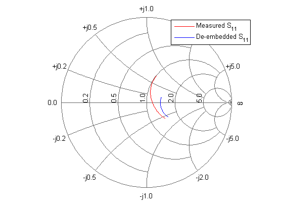
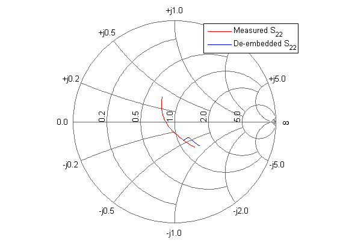
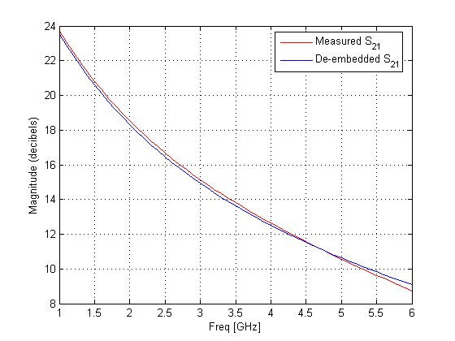

The S-parameter data in the file "samplebjt2.s2p" was collected from a bipolar transistor in a fixture with a bond wire (series inductance 1nH) connected to a bond pad (shunt capacitance 100fF) on the input, and a bond pad (shunt capacitance 100fF) connected to a bond wire (series inductance 1nH) on the output.
This demo shows how you can remove the effect of the fixture and extract the S-parameters of the device under test itself.
Create a data object for the measured S-parameters, by reading a Touchstone data file 'samplebjt2.s2p', and create two circuit objects for the input pad and output pad.
measured_data = read(rfdata.data, 'samplebjt2.s2p'); input_pad = rfckt.cascade('Ckts', {rfckt.seriesrlc('L', 1e-9), ... rfckt.shuntrlc('C', 100e-15)}); % L = 1nH, C = 100fF output_pad = rfckt.cascade('Ckts', {rfckt.shuntrlc('C', 100e-15),... rfckt.seriesrlc('L', 1e-9)}); % L = 1nH, C = 100fF
Analyze the input pad and output pad circuit objects at the same frequencies at which the S-parameters of the bjt were measured.
freq = measured_data.Freq; analyze(input_pad, freq); analyze(output_pad, freq);
De-embed the S-parameters from the measured S-parameters by removing the effects of input and output pads. Create a data object for plotting the de-embedded S-parameters.
z0 = measured_data.Z0; input_pad_sparams = extract(input_pad.RFdata, 'S_Parameters', z0); output_pad_sparams = extract(output_pad.RFdata, 'S_Parameters', z0); de_embedded_sparams = deembedsparams(measured_data.S_Parameters, ... input_pad_sparams, output_pad_sparams); de_embedded_data = rfdata.data('Z0', z0, 'S_Parameters', ... de_embedded_sparams, 'Freq', freq);
hold off; h = smith(measured_data, 'S11'); set(h, 'Color', [1 0 0]); hold on; h = smith(de_embedded_data, 'S11'); set(h, 'Color', [0 0 1]); l = legend; legend(l, {'Measured S_{11}', 'De-embedded S_{11}'}); legend show;
hold off; h = smith(measured_data, 'S22'); set(h, 'Color', [1 0 0]); hold on; h = smith(de_embedded_data, 'S22'); set(h, 'Color', [0 0 1]); l = legend; legend(l, {'Measured S_{22}', 'De-embedded S_{22}'}); legend show;
hold off; h = plot(measured_data, 'S21', 'db'); set(h, 'Color', [1 0 0]); hold on; h = plot(de_embedded_data, 'S21', 'db'); set(h, 'Color', [0 0 1]); l = legend; legend(l, {'Measured S_{21}', 'De-embedded S_{21}'}); legend show; hold off;